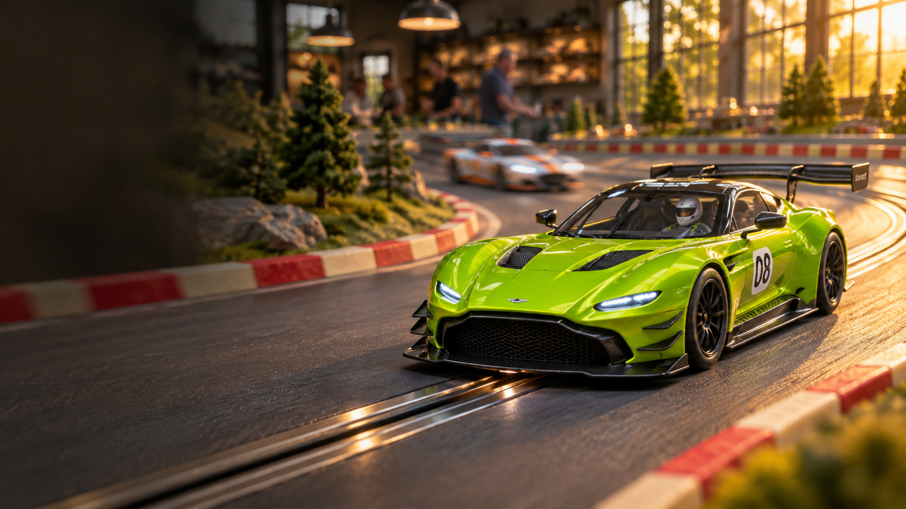

MINIATURE CARS. MASSIVE RUSH.
15 circuiti. Rettilinei fino a 62 metri. Tre piloti.Senti il motore, prepara la frenata, trova il tuo limite.
OVERDRIVE / 4.0 · Musica originale, coach di frenata e gare locali.
Stesso dispositivo: P1 SPAZIO / INVIO · P2 W / E · P3 I / O. Su touch, ciascuno usa i pulsanti del proprio colore. Camera dall’alto consigliata.
Rilascia il gas prima della curva
Corsia 1
PRENDITI UN RESPIRO
La pista ti aspetta.
TRAGUARDO
Finisci una gara, guadagna crediti e migliora la macchina.
La macchina segue il binario. Tieni Spazio o il pulsante ACCELERA per dare gas, rilascia per rallentare. Con il gas a interruttore basta un clic per accendere o spegnere.
SCAMBIO o Invio prenota il prossimo scambio a X. Premi di nuovo per annullare. Il cambio avviene solo sugli scambi; non serve sterzare. Shift e frecce laterali restano compatibili.
C cambia camera. P o Esc mette in pausa. La velocità in km/h è l’equivalente in scala 1:18; la simulazione usa metri e secondi del modellino.
In manuale, troppo gas in curva fa partire il retrotreno: alza il gas per recuperare. Se insisti, il pattino si stacca e perdi 3 secondi. Anche i bot sgommano, sbagliano e rientrano con la stessa penalità. Hanno il tuo stesso motore, magneti e freno. La guida assistita frena prima ed è più lenta. Il record distingue pista, difficoltà, assistenza e potenziamenti.
Tutti i 15 circuiti sono già disponibili. Completa gare contro i bot per guadagnare stelle, crediti e potenziamenti. Le stelle premiano posizione e guida pulita. Gli avversari prendono decisioni con un tempo di reazione: nessun bonus nascosto di velocità o tenuta. Le auto non si urtano in questa versione.
In due o tre: scegli la modalità locale. P1: Spazio / Invio; P2: W / E; P3: I / O. Su telefono usate i pulsanti colorati, anche con gas a interruttore. Stesso dispositivo, nessuna connessione tra telefoni. Dopo il primo arrivo, gli altri hanno 30 secondi per finire. Tutti condividono difficoltà, potenziamenti e assistenza.
Coach: nelle prime quattro piste mostra dove iniziare a rilasciare, senza frenare al posto tuo. Puoi attivarlo su tutte le piste o spegnerlo. Audio: premi Attiva audio; dal mixer puoi togliere solo la musica.
Audio spento · premi Attiva audio in alto
Il motore sale con velocità e gas. Il freno motore soffia al rilascio. Le gomme stridono quando perdi aderenza. Con il coach, un tono discendente invita a rallentare. La musica lascia spazio alle sgommate.